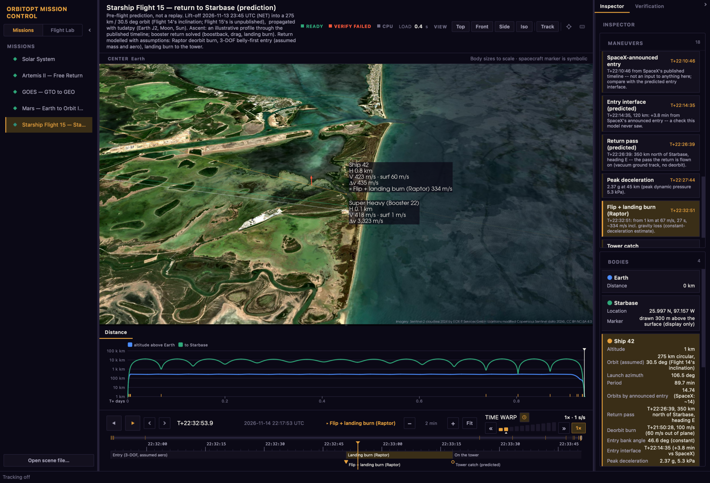
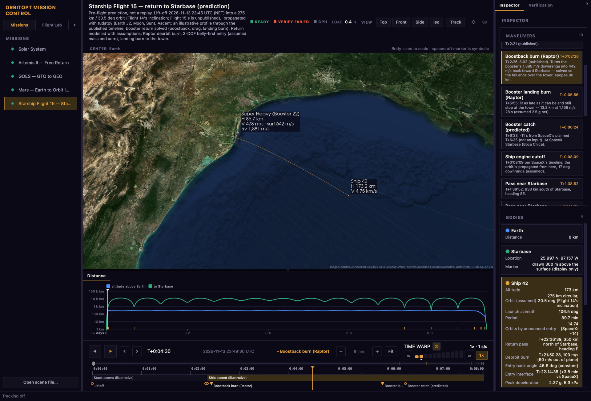

Using Mission Control
Mission Control is orbitopt's desktop app for working through a mission: the trajectory in 3D, every burn on a timeline you can zoom to the second, live height, speed and Δv beside each vehicle, and the verification behind the numbers. This page covers what each part does and how to drive it.

01Install and open
The compute stack (pykep, pygmo, tudatpy) comes from conda-forge, so install into the locked
environment, then run orbitopt:
micromamba create -n orbitopt -f envs/cpu.conda-lock.yml micromamba activate orbitopt pip install -e . --no-deps orbitopt # Mission Control, all missions in the sidebar orbitopt view starship-flight-15 # one mission in the single-scene viewer orbitopt view my_mission.yaml # run a config, then open it
Built-in missions: solar-system, artemis2, goes,
mars and starship-flight-15. Pick one in the left sidebar to load it.
Every built-in ships precomputed, so it opens in about a second. If you change orbitopt's code, the
mission still opens at once from the shipped scene and the title bar offers Precomputed by older code ·
Recompute; recomputing Starship takes several minutes, and the result is cached afterwards.
02The window
Every panel follows the same mission time and the same selected body, so scrubbing the timeline, clicking a chart or picking a maneuver moves all of them together.
VERIFICATIONreports and checks
- Missions (left): switch missions without relaunching. File › Open scene file… opens any scene JSON.
- Flight Lab: the Missions | Flight Lab switch at the top of the sidebar. Flight Lab is its own mode, not a mission: the sidebar becomes its navigation. Designer sets up and simulates a launch, Replay plays a run with its telemetry, checks and booster recovery, and Compare puts two runs side by side. Recent runs lists each run with its verdict; Open run… loads any run directory. Switch back to Missions to return to the mission you had open.
- 3D view (middle): the trajectory, bodies and burns. The CENTER strip above it re-centers the view on the Sun, Earth, Mars or the Moon, so an Earth departure and a Mars capture are visible at their own scale.
- Charts (below the view): Distance, the spacecraft's distance to each body over the mission; click or drag on it to move the time. Launch window, the porkchop grid the optimizer screened.
- Inspector (right): three framed sections, each scrolling on its own; drag the borders between them to share the height. Verification is the second tab.
- Timeline (bottom): playback, the time box, the zoomable track and time warp. See Time.
Collapse the side panels with the chevrons in their headers, or I for the right one.
03Moving around in 3D
| DO | TO |
|---|---|
| Left-drag | Rotate the view about its focus |
| Scroll / right-drag | Zoom in and out |
| Shift-drag or middle-drag | Pan |
| Click a body | Select it (its card lights up in the inspector) |
| ⌘/Ctrl-click a second body | Measure the distance between the two |
| Tab / ⇧Tab | Focus the next / previous body, spacecraft first (as in KSP's map view); the planet stays locked behind it |
| T | Track the selected body: the camera follows it as time moves |
| M | Zoom to the selected body |
| R | Reset the camera |
View also has top, front, side and isometric views. Clicking a maneuver in the inspector jumps to it and frames the burn, with its Δv arrow drawn in the view.
04Time and the timeline
The timeline along the bottom shows a window of the mission that zooms from the whole mission down to two seconds across, so a 30-second landing burn is as easy to scrub as a 300-day cruise.
Playing
- Space or ▸ plays forward; ⇧Space or ◂ plays backwards. The same key again pauses, the other key turns around. Playback stops at either end.
- The ‹ › buttons (and ⇧← / ⇧→) jump to the previous / next event.
- Home goes back to the start.
The track
From the top, the track shows an overview strip of the whole mission with the visible part bracketed, a ruler in mission elapsed time (MET), the mission's phases, and the events with their names. Burns are filled triangles, other events open circles; the amber line is the playhead.
| DO | TO |
|---|---|
| Scroll up / down on the track | Zoom in / out about the cursor |
| Scroll sideways, or right-drag | Pan the visible window |
| Drag the bracket in the overview strip | Pan; click elsewhere in the strip to center there |
| Click or drag on the ruler | Move time there (dragging pauses playback) |
| Grab the playhead and drag | Nudge time from where it is, without jumping |
| ⇧-drag | Scrub ten times finer (press or release Shift mid-drag; it carries on from there) |
| Click an event / a phase | Jump to it / to the phase's start |
| Double-click an event / a phase | Zoom the track to it |
| = - 0 | Zoom in, zoom out, fit the whole mission (also the − Fit + buttons) |
| ← → | Step 1% of the visible window; with Alt, 0.1%. Steps get finer as you zoom in |
While playing, the track pages along when the playhead reaches its edge; a jump elsewhere re-centers it.
Going to a time
Click the MET readout (or press G), type a time and press Return:
| TYPE | MEANS |
|---|---|
T+22:32:34 | Mission elapsed time, h:mm:ss (T-10s before liftoff) |
6m35s, 1d 2h, 395 s, 1.5h | MET in units |
1d 02:00:00, 6:35 | MET with days, or m:ss |
+30s, -5m | Relative to the current time |
2026-11-14 03:12 | A UTC date and time (missions with a calendar epoch) |
2 | A bare number, in the timeline's own unit (days for every built-in mission) |
An entry it can’t read gets a red outline; clicking away restores the current time.
05Time warp
Warp is simulated time per real second, as in KSP: 1× is real time, 1,000× plays 16.7 minutes a second, 10,000,000× crosses a Mars cruise in about three seconds. Each mission opens at real time (1×); warp up with . or the ladder.
- The ladder has one bar per level (0.1×, 1×, 5×, 10×, 50×, 100×, 1k, 10k, 100k, 1M, 10M). Click a bar for that warp; scroll on it to fine-tune between levels. The small triangle marks 1×.
- 1× returns to real time in one click (/); it lights up while you're at 1×.
- « » step a level down / up (, .); [ ] fine-tune.
- The clock toggles auto-slow: playback eases down near events so a burn doesn't flash past, and the readout shows the warp actually playing. Hover the readout for how long the whole mission takes at this warp.
06Reading the flight
Flight-data labels
Beside each vehicle (toggle with L):
- H: height above the WGS-84 ellipsoid (or R, distance from the scene's center, away from a planet).
- V: inertial speed; below 120 km also surf, speed relative to the rotating ground, the one that matters for entry and landing.
- Δv: delta-v spent in burns so far, shown from the vehicle's first burn.
- » burn: the burn in progress and its size.

Inspector
- Maneuvers: every event with its MET; the current one is highlighted and kept in view. Click one to jump there and frame the burn.
- Bodies: one card per body with its live altitude or distance and its facts. Click to select; ⌘/Ctrl-click to measure.
- Candidate (optimized missions): the selected candidate's dates, Δv and verification.
Charts
Distance plots distance to each body over the whole mission (Starship's shows every pass near Starbase as a dip); the vertical line is the current time, and clicking or dragging moves it.
07Earth imagery
The bundled Earth map is about 5 km per pixel: fine from orbit, a blur from a few km up. Close to Earth, Mission Control streams Sentinel-2 cloudless satellite tiles for the part of the planet in view, down to about 10 m per pixel, and drapes them over the globe. Sharper tiles replace coarser ones as they arrive.
- Turn it on or off in View › High-res Earth imagery.
- Tiles are cached on disk (
~/Library/Caches/orbitopt/tileson macOS,~/.cache/orbitopt/tileson Linux;ORBITOPT_TILE_CACHEmoves it), so a view loads in a second or two the second time. ORBITOPT_EARTH_TILES=offturns off all downloading.
Imagery: Sentinel-2 cloudless 2024 by EOX IT Services GmbH (contains modified Copernicus Sentinel data 2024), licensed CC BY-NC-SA 4.0: non-commercial use only. The credit is shown in the view whenever tiles are drawn.
08Candidates and verification
For an optimized mission (Mars), the left panel's Trajectories list shows each distinct candidate the optimizer found and what happened to it at the verification gate. Selecting one highlights its two-body screening arc in 3D and fills the inspector's candidate card; the amber trajectory is the one flown in high fidelity.

The title bar's badge always says VERIFIED, VERIFY FAILED or NOT CHECKED. The Verification tab lists every check with its residual and tolerance, the force model, integrator step convergence and conservation checks. GOES loads unverified by default (the TudatPy re-fly takes about a minute); its tab has a button to run it.
Starship Flight 15 carries four reports: an independent re-fly of the return with other integrators, guided recovery from eight dispersions (air density, burn timing and Δv, lift-to-drag), loads and propellant against assumed limits, and SpaceX's published timeline. Each check shows the measured value and its limit. It reads VERIFY FAILED on purpose: with 10% less lift than assumed the ship cannot reach Starbase, because the nominal entry already uses all of its cross-range at the assumed 30.5° inclination. The report also gives the inclinations at which the entry alone reaches Starbase (up to 29.97°; up to 29.09° with 10% less lift).
09Your own missions
Describe a mission in YAML (kinds geo-raising, mars-transfer, lunar-free-return);
omitted fields fall back to the built-in mission's values.
orbitopt validate my_mission.yaml # schema check, no compute orbitopt run my_mission.yaml # optimize, verify, write scene + report orbitopt view my_mission.yaml # run (cached) and open
Any scene JSON (orbitopt export, or written by your own code) opens with
File › Open scene file…. Editing orbitopt's code while Mission Control is open shows a
Code changed · Reload button in the title bar; it (or ⌘R / Ctrl+R) restarts the
compute worker with the new code and recomputes the current mission. See the README for the config format.
10Keyboard shortcuts
F1 shows these in the app.
| KEY | DOES |
|---|---|
| Space / ⇧Space | Play / play backwards (the same key again pauses) |
| ← → | Step 1% of the visible timeline (Alt: 0.1%) |
| ⇧← ⇧→ | Previous / next event |
| Home | Restart |
| = - 0 | Zoom the timeline in / out / fit |
| G | Go to time |
| , . | Warp down / up a level |
| / | Real time (1×) |
| [ ] | Fine-tune warp |
| Tab / ⇧Tab | Focus next / previous body |
| T | Track selected body |
| M | Focus (zoom to) selected body |
| L | Flight-data labels on / off |
| R | Reset camera |
| I | Toggle the right panel |
| F1 | Shortcut reference |
| ⌘R / Ctrl+R | Reload the mission with edited code |
| ⌘Q / Ctrl+Q | Quit |
11Troubleshooting
- A mission takes minutes to open. It is being computed (after Recompute, or for your own configs); the scene is cached afterwards, keyed on orbitopt's source. Built-in missions otherwise open from the precomputed scenes shipped with orbitopt.
- No satellite imagery near Earth. Check View › High-res Earth imagery, the network, and that
ORBITOPT_EARTH_TILESisn'toff. Imagery appears only within a few Earth radii. - The 3D view is black in a screenshot. Window captures miss the OpenGL view; use
scripts/capture_screenshots.py, which composites it. - Something else. Open an issue with the mission, what you did and what you saw.